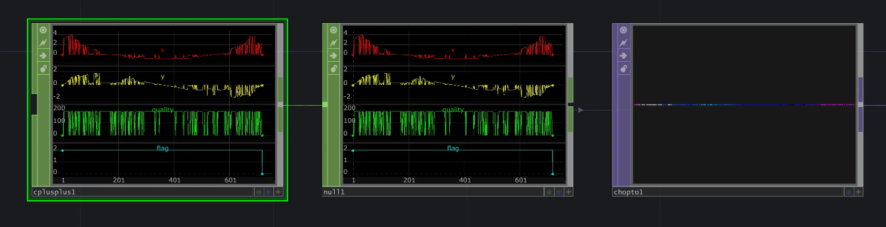
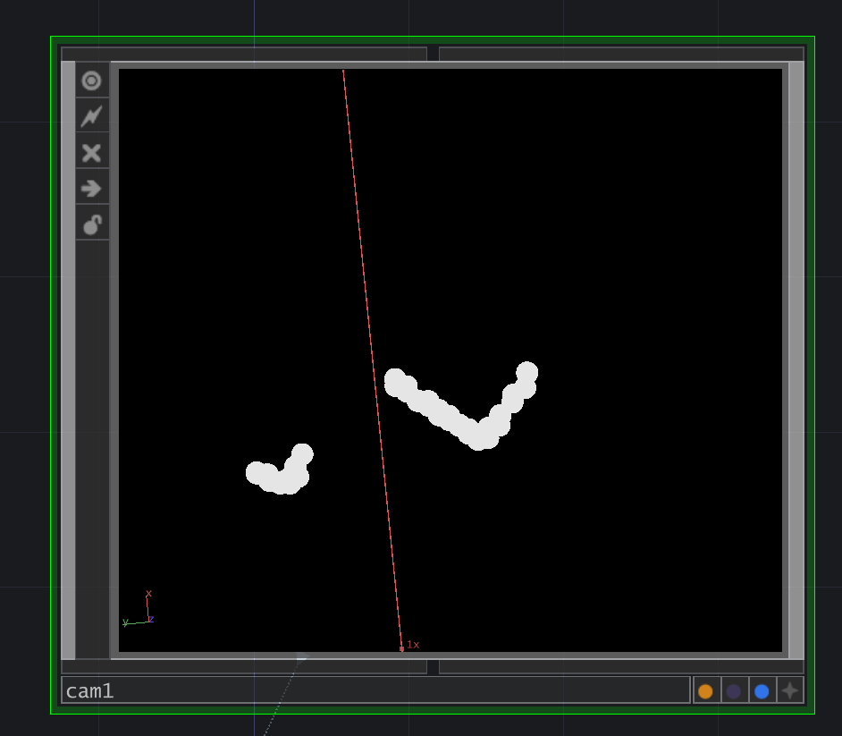

Interactive Projection Mapping Installation
Featured at: Embodied Particles — CETI Institute
This is finished version of this spatial mapping/interaction project. I created an exhibition that ran for 3 consecutive days at the Lloyd Center in Portland Oregon. About 2000 people came through and interacted with the exhibit. I was thrilled!
Design and Conception
{kind=link}
I created a projection pipeline using a lidar sensor to provide live object detection to a TouchDesigner network, and used some simple GLSL shaders to generate a variety of live visuals which are then projected onto the area of a yoga mat.
Effectively, it becomes a scalable multitouch display that people can interact with.
Background and Motivation
I’m avid benefits of physical activity for general wellbeing. I originally started designing the system as a positioning aid for yoga poses, where a number of static and foot locations could be queued up like a slideshow, but over time and through incremental education and improvement it has evolved into a platform for all kinds of spatial interaction and projection mapping experiments.
Execution
Before I got the cinegrey mat I had a length of beige canvas as a projection surface and a 300 lumen miniprojector. The below video shows an early experiment with interactive floor projection. I simulated the particle system and wrote a basic force interaction model, so that the leap motion device on the floor in front of me could act as attractors and colliders, depending on how tightly I clenched my fist.
From a previous project, I had access to a VLP-16 puck, which was drastic overkill for mapping my office floor. Ultimately I wanted this pipeline to be lidar-agnostic, so that I could mix and match different lidars depending on the room size, and whether of not I needed multiple lidar units to detect objects in the infrared shadow of other units.
LiDAR Integration
Below shows a set of objects in the scan zone, and their corresponding return map. I generated this map visual by converting the cartesian coordinates of a 360 degree scan to RGBA components of a 1 x number of points in the cloud texture. This was to instance a single circle across the entire point cloud to “thicken” the cloud, and make it more suitable for blob detection.
{kind=link}

{kind=link}
{kind=link}

Below shows the blob detection routine in action as I walk around the objects. I transcribed the U, V, width, and height values of each blob again into the RGBA channels of an image, with a pixel count equal to the current number of detected blobs.
From there, I had positional information I could overlay over my projection area to drive other real-time visuals I’ve designed. Below shows the detection output as the XY location of attractors and collider inputs to a simple particle simulation I made. I now have a flexible system where I can acquire raw sensor output, process it into usable interaction data, and pipe it into interactive installations at 35-60 FPS.